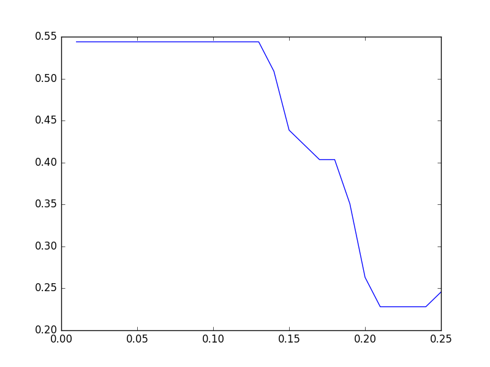

Tutorial¶
In this tutorial, we will run Fraud Eagle algorithm [1] on a synthetic data set provided in [2].
Installation¶
An implementation of Fraud Eagle, rgmining-fraud-eagle, is available in PyPI. A Synthetic Review Dataset, rgmining-synthetic-dataset, is also available in PyPI. At first, we need to install both packages via pip.
pip install --upgrade rgmining-fraud-eagle rgmining-synthetic-dataset
Constructing a review graph¶
rgmining-synthetic-dataset has synthetic package which exports function synthetic.load() and constant synthetic.ANOMALOUS_REVIEWER_SIZE. The function synthetic.load() loads the synthetic data set and adds them to a review graph. Constant synthetic.ANOMALOUS_REVIEWER_SIZE represents how many anomalous reviewers the data set has and it’s \(57\). Every anomalous reviewer has anomaly in their name.
Let us omit to explain how to construct the synthetic data set. If you are interested in that, please read the original article.
In order to make a review graph object of Fraud Eagle algorithm and load the synthetic data set, run
import fraud_eagle as feagle
import synthetic
graph = feagle.ReviewGraph(0.10)
synthetic.load(graph)
where, \(0.10\) is a parameter of Fraud Eagle. See fraud_eagle.ReviewGraph for more information.
Running Fraud Eagle algorithm¶
Since Fraud Eagle takes one parameter, we have a question that which value is the best one to determine anomalous reviewers. In this tutorial, we evaluate each parameter with precision of top-57 anomalous reviewers, i.e. how many actual anomalous reviewers appear in top-57 highest anomaly reviewers.
To evaluate one parameter, we make a simple script analyze.py:
#!/usr/bin/env python
import click
import fraud_eagle as feagle
import synthetic
@click.command()
@click.argument("epsilon", type=float)
def analyze(epsilon):
graph = feagle.ReviewGraph(epsilon)
synthetic.load(graph)
for _ in range(100):
diff = graph.update()
print("Iteration end: {0}".format(diff))
if diff < 10**-4:
break
reviewers = sorted(
graph.reviewers,
key=lambda r: -r.anomalous_score)[:synthetic.ANOMALOUS_REVIEWER_SIZE]
print(len([r for r in reviewers if "anomaly" in r.name]) / len(reviewers))
if __name__ == "__main__":
analyze()
Note that the above script uses a command-line parser click.
With this script, to evaluate a parameter, e.g. \(0.1\), run:
$ chmod u+x analyze.py
$ ./analyze.py 0.1
The result might be :
$ ./analyze.py 0.10
Iteration end: 0.388863491546
Iteration end: 0.486597792445
Iteration end: 0.679722652169
Iteration end: 0.546349261422
Iteration end: 0.333657951459
Iteration end: 0.143313076183
Iteration end: 0.0596751050403
Iteration end: 0.0265415183341
Iteration end: 0.0109979501706
Iteration end: 0.00584731865022
Iteration end: 0.00256288275348
Iteration end: 0.00102187920468
Iteration end: 0.000365458293609
Iteration end: 0.000151984909839
Iteration end: 4.14654814812e-05
0.543859649123
It means about 54% reviewers in the top-57 anomaly reviewers are actual anomalous reviewers.
Parallel evaluation¶
We need to evaluate several parameters with analyze.py to determine the best one. Since it seems taking long time, We employ Google Cloud Platform and Roadie for parallel evaluation.
To use the Google Cloud Platform, you need to register it. After registration, setup Google Cloud SDK and Roadie.
In order to run analyze.py on another environment, we need to prepare requirements.txt, which is a list of related libraries, in the same directory as analyze.py:
click==6.6
rgmining-fraud-eagle==0.9.2
rgmining-synthetic-dataset==0.9.0
Roadie requires a configuration file which is written in YAML and specifies programs to be run on a cloud server. We make analyze.yml and just specify to run analyze.py:
run:
- python analyze.py {{epsilon}}
where {{epsilon}} is a placeholder and we will give several values for it.
At first, we upload our source code and make an instance on the cloud with parameter \(0.01\).
roadie run --local . --name feagle0.01 --queue feagle -e epsilon=0.01 analyze.yml
where --local . means the root of our source code is the current directory, and --queue feagle means the new task belongs to a set of tasks named feagle.
Next, we make instances with other parameters. Those instances use same source code uploaded with the instance named feagle0.01, and the code to create such instances is as follows:
$ for i in `seq -w 2 25`; do
roadie run --source "feagle0.01.tar.gz" --name "feagle0.${i}" --queue feagle -e "epsilon=0.$i" analyze.yml
done
By default, Roadie creates one instance for a set of tasks. We need more instance to run tasks in parallel and create 7 more instances:
$ roadie queue instance add --instances 7 feagle
and roadie status shows current status of every instance, which has a name starting with the queue name and a random number. If roadie status shows nothing, all tasks have done.
The results are stored in Google Cloud Storage and roadie result show <task name> shows the result of a task. To download them in a CSV file, run
$ for i in `seq -w 1 25`; do
echo "0.${i}, `roadie result show feagle0.${i} | tail -1`" >> result.csv
done
We now create a simple script, plot.py, to plot the results:
#!/usr/bin/env python
import click
from matplotlib import pyplot
import pandas as pd
@click.command()
@click.argument("infile")
def plot(infile):
data = pd.read_csv(infile, header=None)
pyplot.plot(data[0], data[1])
pyplot.show()
if __name__ == "__main__":
plot()
The above script requires, click, matplotlib, and pandas.
After running the script by
$ chmod u+x plot.py
$ ./plot.py result.csv
we get the following graph, where x-axis means parameter values and y-axis means precision.
From the graph, the parameter should be less than \(0.1\).
References¶
| [1] | Leman Akoglu, Rishi Chandy, and Christos Faloutsos, “ Opinion Fraud Detection in Online Reviews by Network Effects,” Proc. of the 7th International AAAI Conference on WeblogsS and Social Media (ICWSM 2013), Boston, MA, July, 2013. |
| [2] | Kazuki Tawaramoto, Junpei Kawamoto, Yasuhito Asano, and Masatoshi Yoshikawa, “ A Bipartite Graph Model and Mutually Reinforcing Analysis for Review Sites,” Proc. of the 22nd International Conference on Database and Expert Systems Applications (DEXA 2011), pp.341-348, Toulouse, France, August, 2011. A Bipartite Graph Model and Mutually Reinforcing Analysis for Review Sites,” Proc. of the 22nd International Conference on Database and Expert Systems Applications (DEXA 2011), pp.341-348, Toulouse, France, August, 2011. |